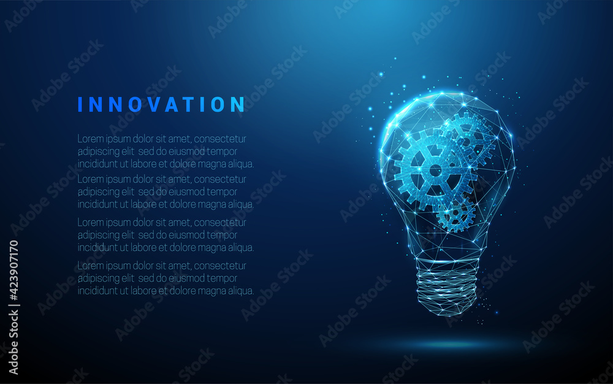

WELCOME TO TECH INNOVATORS INC
How Tech Innovation is Changing the Future
Tech Innovation is rapidly changing the world around us. From artificial intelligence to the Internet of Things, the future is being shaped by technological advancements...
Read MoreThe Rise of Sustainable Tech in 2025
Sustainable tech is becoming one of the most important trends in the tech industry. With growing concerns about climate change, technology is leading the way in creating eco-friendly solutions...
Read More